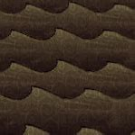
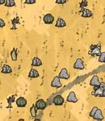

Dont Starve
Introduccion
Dont Starve fue lanzado el 24 de abril de 2013, actualmente está disponible para Windows, Mac OC X, Linux, a través de steam o una aplicación independiente, también está disponible en PlayStation 4, PlayStation Vita, PlayStation 3, iOS, WII U, Xbox One, Nintendo Switch.
Es un juego de supervivencia que no tiene una dificultad fija, ya que siempre apareceremos en mundos distintos y empezaremos con una estación diferente, lo que contribuye a la dificultad del juego, el juego cuenta con opciones que le permiten al usuario regular el rango de aparición de los mobs y los recursos, así como los jefes, lo que nos permite subir o bajar la dificultad.
El lugar donde ocurre el juego y las dificultades que aporta cambian segun la version, el juego consta de 5 versiones:
- Dont Starve (normal)
- Reign of giants (regien de gigantes)
- Hamblet
- Shipwrecked
Dont Starve (Reign of giants)
El jugador empieza el juego controlando a un personaje llamado wilson, con el entras en un mundo extraño e inexplorado lleno de extrañas criaturas, peligros y sorpresas. Tendras que reunir recursos para crear objetos y estructuras que coincidan con tu estilo de supervivencia. El juego carece de guias que te guien durante la partida, por lo que el jugador tendra libre albedrio para vagar por el mundo. A medida que vayamos avanzando en el juego nos encontratemos con dificultades como las estaciones, que pueden someter incluso al jugador mas preparado, boses y areas nuevas que tienen una mayor dificultad, para las cuales tendremos que prepararnos con mucha antisipacion.
Cuando empezamos el juego es muy probable que muramos seguido, esto es normal, ya que el jugador debera aprender de sus errores para saber como estar mas preparado la proxima vez, esto suele ocurrir con frecuencia al enfrentarnos por priera vez a las estaciones del año.
Biomas

Bosque |

Pradera |

Savanna |
|---|---|---|

Pantano |

Tierra Rocosa |

Mosaico |

Ajedrez |

Cementerio |

Oceano |

Bosque Caducifolio |

Desierto |
Estaciones
Verano:Durante el verano los dias son mas largos y las noches mas cortas, sufrimos de calor el cual si no nos enfriamos a tiempo nos ara daño, presione aqui para mas informacion: Verano
Invierno:Durante el invierno los dias son mas cortos y las noches mas largas, nos dara frio al estar demasiado tiempo lejos de una fuente de calor, el cual eventualmente nos ara daño, presione aqui para mas informacion: Invierno
Otoño:Durante el otoño los dias son regulares no sufrimos ni calor ni frio, presione aqui para mas informacion: Otoño
Primavera:Durante la primavera tendremos un clima inestable con muchas lluvias, esto ocacionara humedad, haciendo que las plantas crezcan mas rapido y el jugador se moje, presione aqui para mas informacion: Primavera